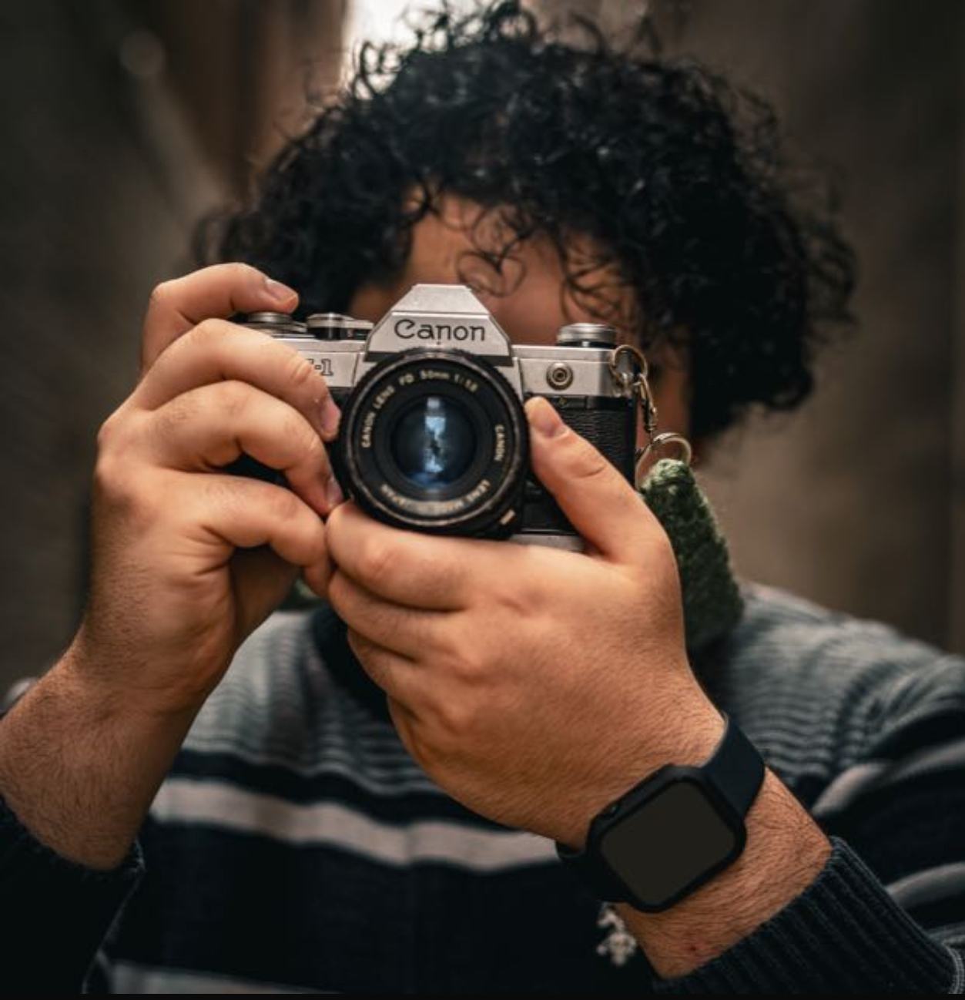

About Me
Hi, I'm a 24-year-old soon to be medical student passionate about pediatric neurosurgery. I moved to the United States at the age of three from Turkey. My journey in medicine is driven by a deep fascination with the human brain and a desire to help children.